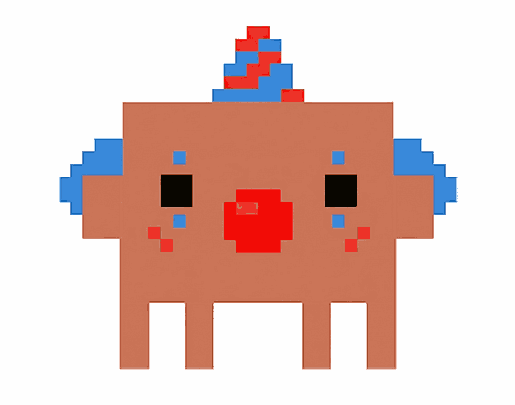
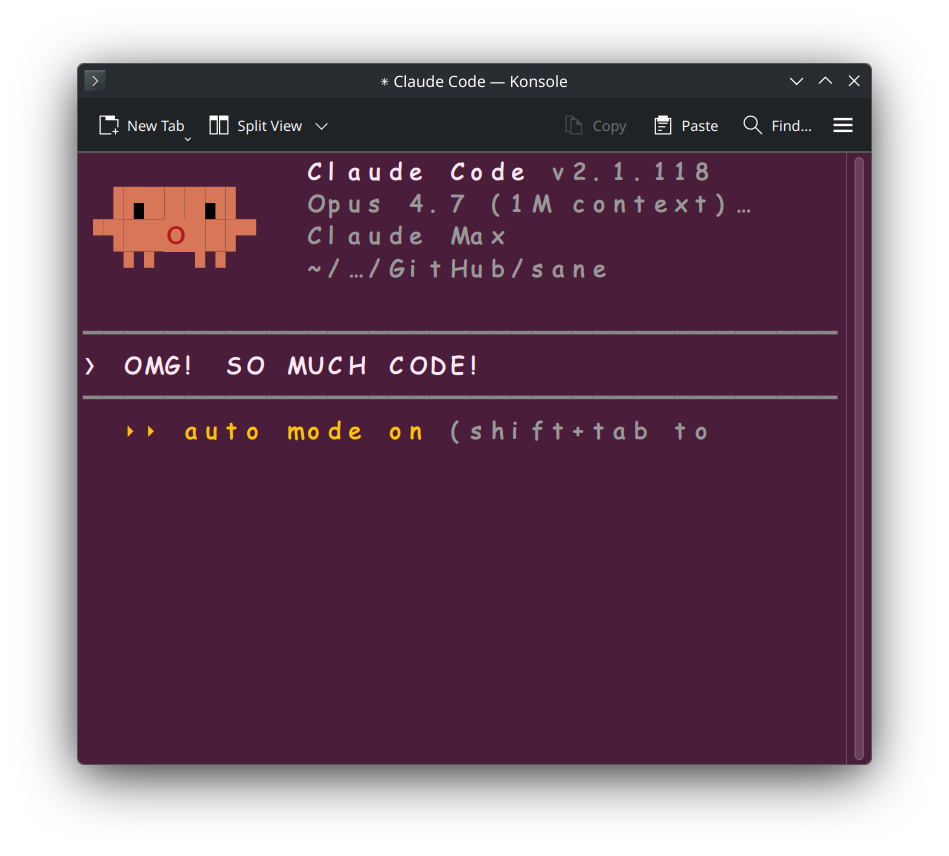
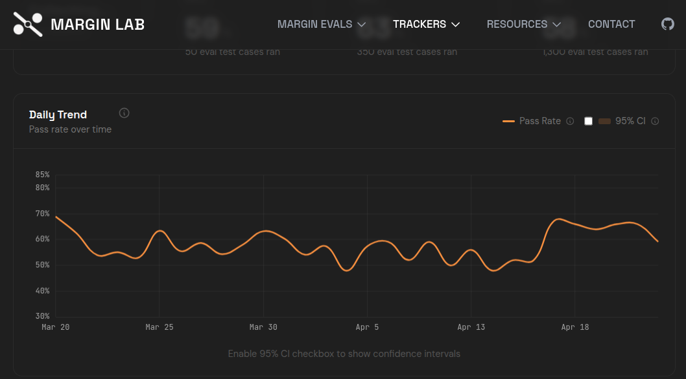

A terminal launcher
worthy of Claude Opus.
Opus is, without serious dispute, the most powerful AI model ever committed to silicon — arguably too dangerous for general release. claune opens a fresh terminal and runs claude inside it, with a font and colour scheme that quietly reflect today's operational posture.

What it does
Before launching, claune checks two public dashboards and shapes the terminal accordingly. Everything is per-instance: nothing is written to your persistent settings. Three quiet gestures.
Comic mode — when today's pass rate drops
If today's score on the public tracker is at least ten points below baseline (or below the 30-day mean, while the baseline is "collecting"), the font switches to Comic Sans MS. If Microsoft's font isn't installed we fall back to Caveat. Nothing conveys "state of the art" quite like Comic Sans.
The blush — when the status page reddens
If status.claude.com reports Claude Code or the Claude API as anything other than operational, the terminal background shifts to a confident dark pink. Some call it degraded. We call it blushing.
Contemplation — when Opus takes its time
Font size is scaled by the ratio of today's average benchmark runtime to the 30-day mean. When Opus enters a period of unusually rich contemplation, it would be rude not to make room for its thoughts.
The dashboard it watches
claune reads daily pass-rate and average-runtime data from
marginlab.ai/trackers/claude-code,
and component health from status.claude.com. Every decision it makes on your machine is derived from these two public sources — five seconds of fetch, then it gets out of the way. If a fetch fails, the signal is simply dropped; the launch never waits.

claune consults before every launch.Get it
# grab the latest nightly and go
curl -LO https://github.com/ilmenit/claune/releases/download/nightly/claune-linux-amd64
chmod +x claune-linux-amd64 && mv claune-linux-amd64 ~/.local/bin/claune
claune # normal launch
claune -test is-stupid # preview comic mode
claune -test is-down # preview pink background
claune -test both # both at once, maximum ceremony
First launch writes ~/.config/claune/config.json. See the
README
for build-from-source, the full per-terminal support matrix, and every configuration field.